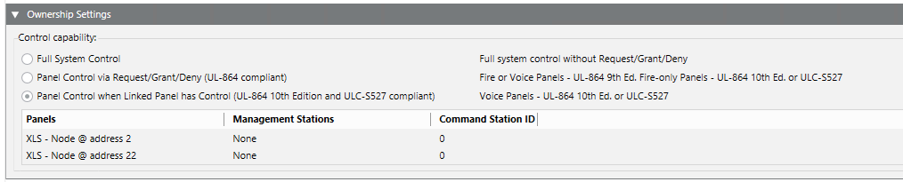
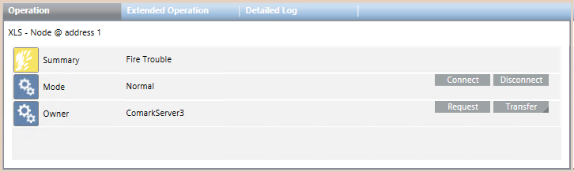
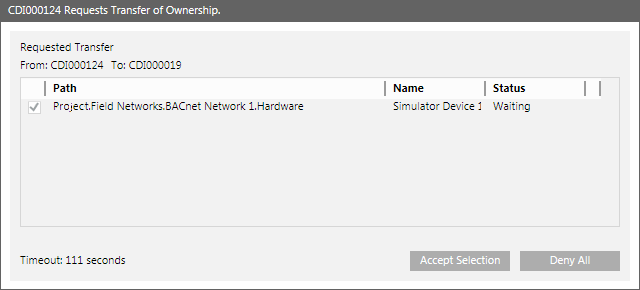
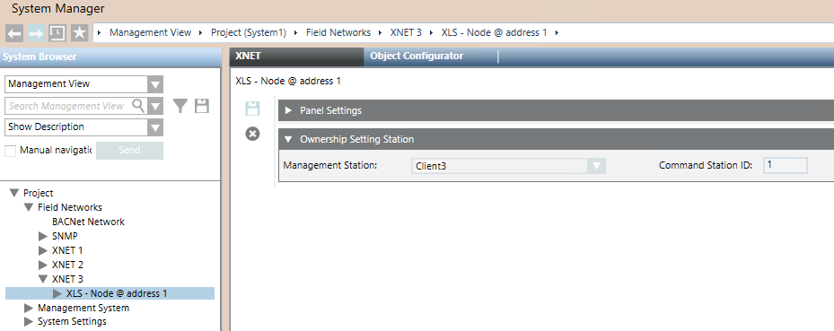

Ownership of XNET Fire Panels
In the XNET network configuration, the XNET tab contains the Ownership Settings expander where you select the Control Capability mode.
The Control capability section enables you to select one of the three ownership modes:
0) Full system Control
A) Panel control via Request/Grant/Deny (UL-864 compliant)
B) Panel control when Linked Panel has control (UL-864 10th ed. and ULC-S527 compliant)
Mode 0 is not UL/ULC compliant and allows for the full control of the fire system from the management stations. Mode A supports a request/grant/deny mechanism of the control capability. Mode B requires an association between management stations and control panels (FCC or Global Command Station).

For the configuration procedures in mode B, on XNET, see Configure the XNET Ownership Station, and on GCNET, see Configure the Ownership Station (UL527) for GCNET.
A - Control Commands for Panel-Control-via-Request/Grant/Deny
In this mode, ownership is assigned at panel level. For each panel, it is possible to determine which management station is the current owner.
For background information on this ownership mode, see Requesting Ownership to the Owner Station.
Control Commands Workspace
Select the panel in System Browser and the Owner station displays in the Operation tab as a property along with the Request and Transfer command buttons.

When a station starts a procedure to request or transfer the ownership of a panel (a group of initiating devices), the Request Transfer of Ownership dialog box displays on the receiving station.

Request Transfer of Ownership Fields | |
Item | Description |
From | Displays the name of the owner station of the displayed panels. |
To | Displays the name of the client station that may receive the ownership of some or all of the displayed panels. NOTE: For details about system behavior, see the following Timeout description. |
Areas of Ownership | Displays the list of the panels whose ownership is being transferred. They are identified by:
|
Timeout | Displays the time remaining for the operator to answer before the Request for ownership is automatically accepted, or the Transfer of ownership is automatically denied. |
Accept Selection | Accepts the transfer of ownership on the selected panels. |
Deny All | Denies the transfer of ownership on the selected panels. |
Status of Request/Transfer | |
Status | Description |
Waiting | The ownership request is waiting for a response. |
Rejected | The request has been automatically denied after the timeout expiration. |
Ownership Changed | The owner station of the involved panels changed. |
Aborted | The procedure stopped due to a communication problem. |
Multiple-ownership Requests/Transfers
You can choose to request or transfer more than one panel by issuing multiple commands one after the other. In this case, the Request Transfer of Ownership dialog box on the other station shows a list of items, and the operator can select those for which the request or transfer is accepted or denied.
When the timeout expires, the dialog box remains visible showing the Close button only. If one or more new requests arrive after a timeout expiration, the dialog box will display the list of past requests (no longer active) with the new pending requests appended. Consequently, the timer reactivates, and the Accept Selection and Deny All command buttons become visible again.

NOTE:
You can program macros to execute multiple requests or transfers with a single action. The macros should include the list of panels and the Request or Transfer command for each of them.
B - Configuration Reference for Panel-Control-when-Linked-Panel-has-Control
XNET - Global Command Station configuration
In this mode, ownership is assigned to a panel and the linked station.
For background information on this ownership mode, see XNET Linked Station Ownership Concept
XNET Ownership Setting Workspace
In the Global Command Station configuration, the XNET tab of the panel node contains the Ownership Settings Station expander where you select the management station to associate:
- Management Station: select the station in a drop-down list.
- Command Station ID: enter the numeric ID of the station as set in Zeus tool.

Related Topics
Configure XNET Network
GCNET – FCC Ownership Setting Workspace
In GCNET, the XNET tab of the FCC panel node contains the Ownership Settings Station expander where you select the management station to associate and the buildings (XNET networks) that are controlled.

Related Topics